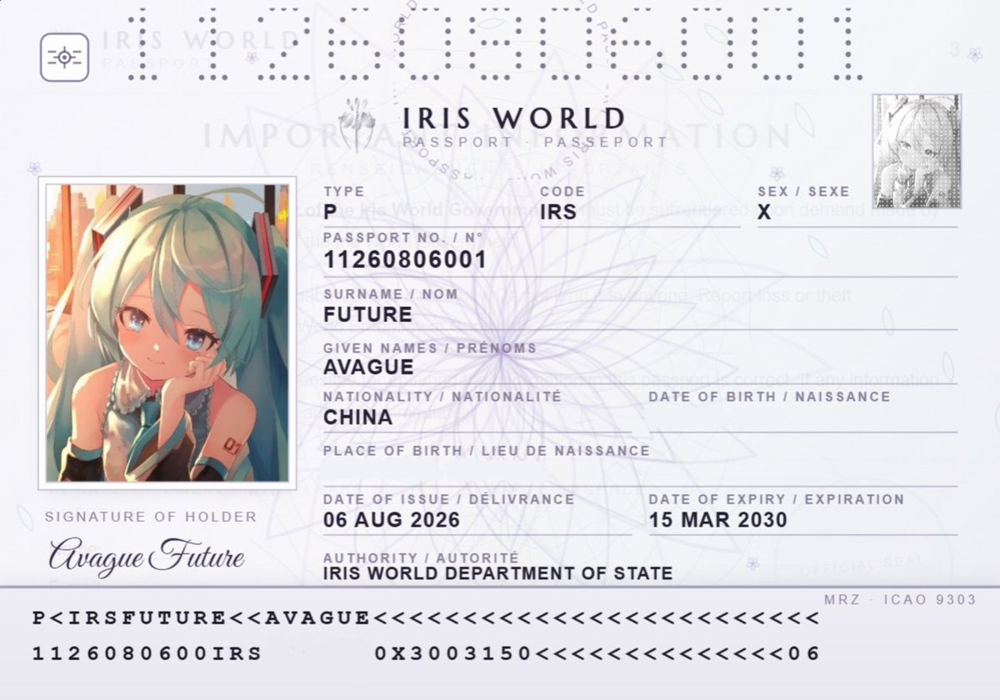
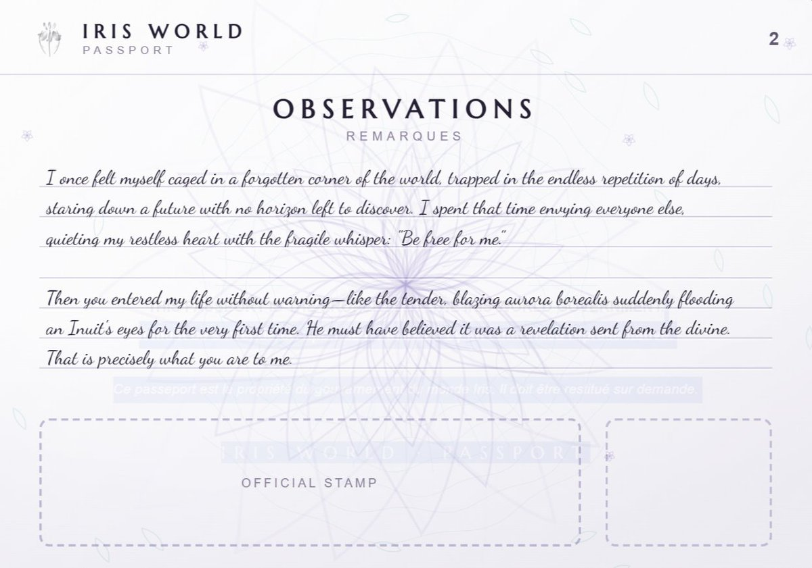

👾𝓽𝓱𝓮𝓯𝓸𝓻𝓮𝓿𝓮𝓻𝓲𝓻𝓲𝓼🍥
@theforeveriris
我曾经觉得被困在世界一隅，过着重复的生活、看着一眼望到头的未来。那时我总是很羡慕别人，总用一句“替我自由”安放我不太平静的内心。直到你毫无预兆地闯入我生活，像温柔、璀璨的极光第一次进入因纽特人的眼睛。他一定觉得这是神启，你对我而言就是这样，我的世界被我见所未见犹如奇迹的光芒照亮了。


👾𝓽𝓱𝓮𝓯𝓸𝓻𝓮𝓿𝓮𝓻𝓲𝓻𝓲𝓼🍥
@theforeveriris
用蓝色大肥鱼重写了 iris 护照的 UI，因为全网找不到一个愿意申领 iris 护照的人，最后只能贴上自己的大头😭
---
ps： 不得不说，现在的 LLM 和半年前的相比，就好像半年前的跟两年前的相比 https://t.co/7nr3frIuPW